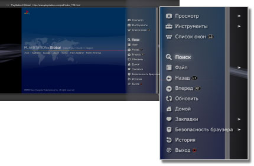

Сеть > Основные операции Веб-браузера
Основные операции Веб-браузера
Просмотр экрана

(1) |
Название страницы |
|---|---|
(2) |
Адрес страницы |
(3) |
Значок SSL |
(4) |
Значок активности |
(5) |
Значок функции "Безопасность браузера" |
(6) |
Адрес объекта ссылки |
(7) |
Указатель |
Способы прокрутки
| Кнопки направлений | Перемещение указателя на ссылку. |
|---|---|
Кнопка  + Кнопки направлений + Кнопки направлений |
Постраничная прокрутка. |
| Правый джойстик | Прокрутка в нужном направлении. |
Использование меню
При нажатии кнопки  отобразится меню, в котором можно выполнять различные операции и настройки. Меню можно отобразить или скрыть, нажав кнопку . Элементы меню в режиме просмотра отличаются от элементов меню в режиме окна.
отобразится меню, в котором можно выполнять различные операции и настройки. Меню можно отобразить или скрыть, нажав кнопку . Элементы меню в режиме просмотра отличаются от элементов меню в режиме окна.

Ввод адреса (URL)
При нажатии кнопки START отображается клавиатура, позволяющая ввести адрес. Если после ввода адреса производится выбор  , клавиатура закрывается и открывается страница с введенным адресом.
, клавиатура закрывается и открывается страница с введенным адресом.
Копирование текста
Вы можете скопировать текст со страницы веб-браузера.
1. |
С помощью левого джойстика переместите указатель к тексту, который вы хотите скопировать, и нажмите кнопку |
|---|---|
2. |
Удерживайте нажатой кнопку |
3. |
Отпустите кнопку |
4. |
Выберите [Копировать] в открывшемся меню. |
Подсказки
- Вы можете вставить скопированный текст, используя кнопку [Вставить] на экранной клавиатуре.
- При выборе варианта [Поиск] в п. 4 можно выполнить поиск в Интернете, при этом скопированный текст будет ключевым словом или фразой.
Печать веб-страницы
Для использования этой функции необходимо настроить принтер в меню  (Настройки) > [Настройки принтера] > [Выбор принтера].
(Настройки) > [Настройки принтера] > [Выбор принтера].
1. |
Откройте веб-страницу, которую вы хотите распечатать, и нажмите кнопку |
|---|---|
2. |
Выберите [Файл] > [Напечатать этот экран]. |
3. |
Проверьте настройки печати. |
4. |
Выберите [Печать]. |
Подсказка
Список поддерживаемых принтеров зависит от страны и региона. Дополнительная информация находится на веб-сайте SCE вашего региона.
Открытие нескольких окон
Можно открыть несколько окон одновременно. Наведите указатель на ссылку, затем нажмите и удерживайте нажатой кнопку  , пока ссылка не откроется в другом окне.
, пока ссылка не откроется в другом окне.